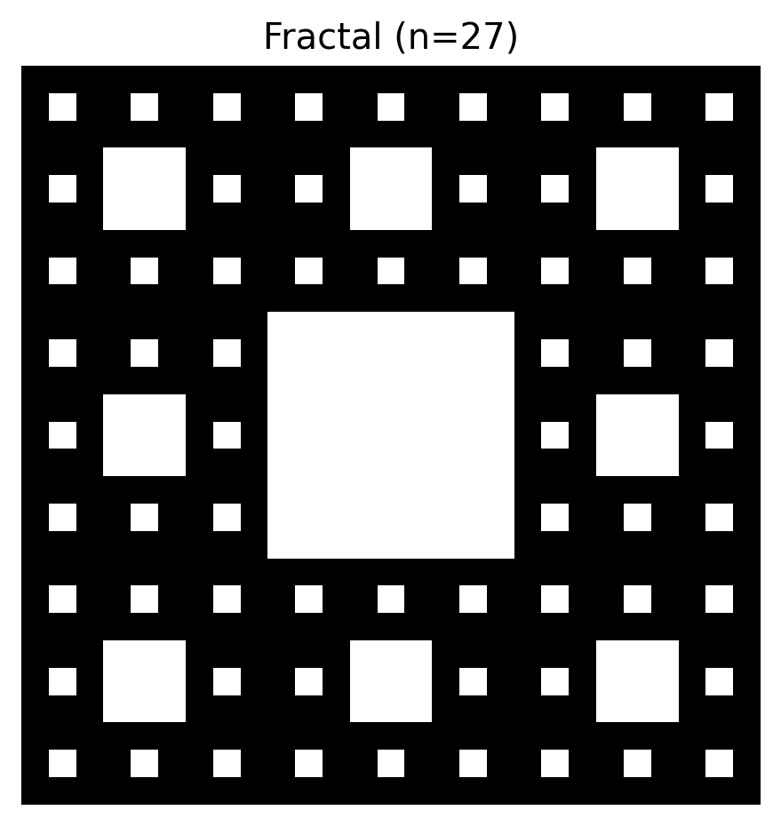
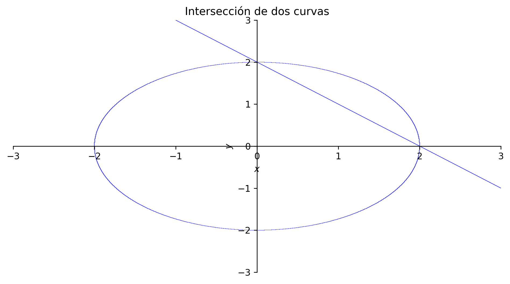

Usar condicionales (if/elif/else) para tomar decisiones sin “romper” el programa.
Escribir bucles (for y while) con acumuladores y contadores, sin errores de lógica.
Crear funciones reutilizables con validación de argumentos.
(Opcional) Usar SymPy para resolver ecuaciones y graficar funciones implícitas sin depender de “cálculo manual”.
Glosario
condicional: bloque que se ejecuta si se cumple una condición (if).
bucle: repite un bloque de código (ej. for, while).
acumulador: variable que “suma”/“junta” resultados dentro de un bucle.
índice: posición dentro de una secuencia (0, 1, 2, …).
return: salida de una función (lo que la función “devuelve”).
argumento: valor que le pasas a una función (ej. raizp(9)).
SymPy: librería para matemáticas simbólicas (resolver/derivar/ecuaciones).
función implícita: ecuación del tipo F(x, y) = 0 (no despejada).
1. Condicionales y bucles (patrones que vas a usar siempre)
1.1 Bucle + condicional (ejemplo básico)
# Ejemplo básico de un bucle y un condicionali =1for x in [1, 7, 20, 12, 9, 17]:if x %2==0:print(i, x, "es par")else:print(i, x, "es impar") i +=1
1 1 es impar
2 7 es impar
3 20 es par
4 12 es par
5 9 es impar
6 17 es impar
NoteSintaxis (en simple)
for x in [...]: recorre elementos de una lista (uno por uno).
if x % 2 == 0: condición (aquí: “¿x es divisible para 2?”).
i += 1: abreviación de i = i + 1 (incrementa el contador).
WarningError común
Olvidar i += 1 deja el contador “congelado” y el resultado se repite mal.
1.2 Bucle con secuencia no numérica y acumulador
# Ejemplo de bucle con secuencia no numérica y variable que se acumulalista = ["Economía", "Estadística", "Python", "Datos"]acum =""for palabra in lista: acum = acum + palabra +" | "acum
'Economía | Estadística | Python | Datos | '
NotePara qué sirve esto
Un acumulador es útil cuando: - construyes texto, - construyes una lista de resultados, - sumas valores (ej. suma total, promedio, etc.).
TipTip
Para textos muy largos, a veces es mejor acumular en lista y al final usar "".join(...). Aquí lo hacemos simple a propósito.
1.3 Índices en un for (cuando necesitas posición)
# Ejemplo de bucle donde el contador se usa como índicex = [10, 2, 7, 15]y = [0] *len(x) # crea una lista de ceros del mismo tamañofor i inrange(len(x)): y[i] = x[i] **2x, y
([10, 2, 7, 15], [100, 4, 49, 225])
NoteSintaxis clave
range(len(x)) produce 0, 1, 2, …, len(x)-1.
y = [0] * len(x) reserva espacio para escribir resultados.
x[i] es “el elemento i-ésimo” (ojo: Python empieza en 0).
WarningError común
Confundir índices: el primer elemento es x[0], no x[1].
1.4 El mismo ejemplo usando while
# Ejemplo anterior usando "while"x = [10, 2, 7, 15]y = [0] *len(x)i =0while i <len(x): y[i] = x[i] **2 i +=1x, y
([10, 2, 7, 15], [100, 4, 49, 225])
NoteCuándo usar while
Úsalo cuando no sabes cuántas repeticiones necesitas de antemano, y la condición “de parada” depende de lo que ocurre dentro del bucle.
WarningError común (grave)
Un while sin i += 1 (o sin actualizar la condición) puede volverse un bucle infinito.
2. Funciones (para no copiar/pegar código)
Una función te permite empaquetar un procedimiento y reutilizarlo:
Recibe argumentos
Hace un proceso
Devuelve un resultado con return
2.1 Ejemplo: raíz cuadrada solo para positivos
# Definimos función que obtiene la raíz cuadrada pero solo de números positivosdef raizp(x):if x <0:returnNonereturn np.sqrt(x)raizp(9), raizp(-9)
(np.float64(3.0), None)
NoteSintaxis clave
def nombre(parametro): define una función.
return ... devuelve un resultado y termina la función.
return None es una forma simple de decir “no hay resultado válido”.
TipTip de calidad
En proyectos reales, muchas veces conviene lanzar un error con raise ValueError(...). Aquí usamos None para mantenerlo amigable para principiantes.
2.2 Función lógica: ¿es potencia de 3?
# Definimos función para saber si un número n es potencia de 3def es_potencia_de_3(n):if n <1:returnFalsewhile n %3==0: n = n //3# división enterareturn n ==1for k in [1, 3, 9, 12, 27, 28, 81]:print(k, es_potencia_de_3(k))
while n % 3 == 0 sigue mientras “sea divisible por 3”.
al final preguntamos si quedó n == 1.
2.3 Función aplicada: fractal tipo “tapete” (Sierpiński) (visual)
En este ejemplo, n debe ser potencia de 3.
# Definimos función para crear un fractal (tapete de Sierpiński) (n debe ser potencia de 3)def ej_fractal(n):ifnot es_potencia_de_3(n):raiseValueError("n debe ser potencia de 3 (ej. 3, 9, 27, 81, ...)") A = np.ones((n, n), dtype=int) step = nwhile step >1: step = step //3for i inrange(0, n, step *3):for j inrange(0, n, step *3): A[i + step:i +2* step, j + step:j +2* step] =0 plt.imshow(A, cmap="gray_r") plt.axis("off") plt.title(f"Fractal (n={n})") plt.show() plt.close()ej_fractal(27)

TipTips y errores comunes
Si usas un n que no sea potencia de 3, este ejemplo debe fallar: eso es intencional (validación).
Si tu entorno no muestra la figura, revisa que estés ejecutando en un notebook (Colab/Jupyter) o en Quarto con ejecución habilitada.
3. SymPy (opcional): ecuaciones, derivadas y gráficas implícitas
Si SymPy no está disponible, el manual no se rompe: simplemente no ejecutamos esta parte.
if sp isNone:print("SymPy no está instalado en este entorno. En Colab puedes instalar con: !pip -q install sympy")
3.1 Expresiones simbólicas y graficar una función
if sp isnotNone:# Importamos módulo SymPy (Symbolic Python: biblioteca para matemáticas simbólicas) x = sp.Symbol("x")# Ejemplo: parábola f = x**2-4*x +3# Graficar con SymPy (rápido) sp.plot(f, (x, -2, 6), title="f(x) = x^2 - 4x + 3", show=True)
NoteSintaxis clave (SymPy)
sp.Symbol("x") crea una variable simbólica.
f = ... crea una expresión simbólica.
sp.plot(...) grafica en un rango.
3.2 Resolver un sistema de ecuaciones (dos ecuaciones)
if sp isnotNone: x, y = sp.symbols("x y") eq1 = sp.Eq(x + y, 10) eq2 = sp.Eq(2*x - y, 3) sol = sp.solve([eq1, eq2], [x, y], dict=True) sol
TipTip
dict=True te devuelve la solución como diccionario, más cómodo para leer y reemplazar.
3.3 Graficar funciones implícitas (una o varias)
A veces tienes ecuaciones del tipo:
F(x, y) = 0
y quieres graficar su curva.
if sp isnotNone: x, y = sp.symbols("x y")# Función para graficar varias funciones implícitasdef plot_implicitas(ecuaciones, xlim=(-5, 5), ylim=(-5, 5), titulo="Funciones implícitas"): p = sp.plot_implicit(ecuaciones[0], (x, xlim[0], xlim[1]), (y, ylim[0], ylim[1]), show=False)for eq in ecuaciones[1:]: p2 = sp.plot_implicit(eq, (x, xlim[0], xlim[1]), (y, ylim[0], ylim[1]), show=False)for s in p2: p.append(s) p.title = titulo p.show()# Planeando y resolviendo un sistema de dos ecuaciones (y graficando) eq1 = sp.Eq(x + y -2, 0) eq2 = sp.Eq(x**2+ y**2-4, 0) plot_implicitas([eq1, eq2], xlim=(-3, 3), ylim=(-3, 3), titulo="Intersección de dos curvas")

WarningError común
En plot_implicit las ecuaciones deben quedar como igualdad a cero (o con Eq(..., 0)). Si no, SymPy a veces interpreta mal lo que quieres graficar.
Ejercicios propuestos
Par o impar (bucle + condicional)
Crea una lista con 10 números enteros y escribe un bucle que imprima si cada uno es par o impar.
Respuesta esperada: 10 líneas, cada una con “par” o “impar”.
Acumulador de texto
Dada una lista de palabras, construye un string final separado por comas.
Respuesta esperada: un string tipo "a, b, c, d".
Cuadrados con índice
Dada una lista x, crea y con los cuadrados, pero esta vez usando un while.
Respuesta esperada:y[i] == x[i]**2 para todo i.
Función de validación
Escribe una función solo_positivos(x) que devuelva x si x>0 y None si no.
Respuesta esperada:solo_positivos(3)=3 y solo_positivos(-1)=None.
Potencia de 3
Prueba tu función es_potencia_de_3 con los valores 1, 2, 3, 9, 18, 27.
Respuesta esperada:True solo para 1, 3, 9, 27.
(Opcional)SymPy: sistema
Resuelve un sistema 2x2 distinto al del ejemplo y muestra la solución.
Respuesta esperada: una solución {x: ..., y: ...}.